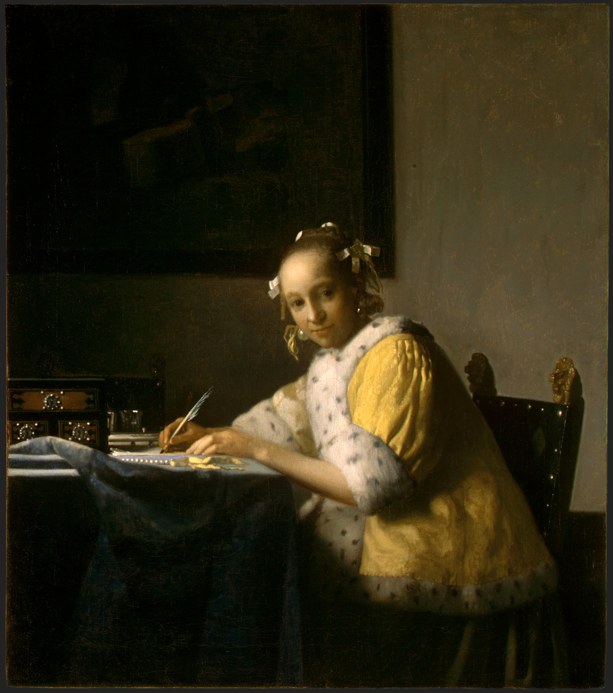

<head>
<meta charset="UTF-8" />
<meta name="keywords" content="drawing, painting" />
<meta name="description" content="drawings by Sunjy" />
<title>Sunjy</title>
<link rel="shortcut icon" type="image/x-icon" href="../../mImages/mCommon/favicon.ico" media="screen" />
<link rel="stylesheet" type="text/css" href="../../mCsses/mCommon/mCssA.css" />
<link rel="stylesheet" type="text/css" href="../../mCsses/mCommon/mCssB.css" />
<link rel="stylesheet" type="text/css" href="../../mCsses/mCommon/mCssC.css" />
<link rel="stylesheet" type="text/css" href="../../mCsses/mCommon/mCssD.css" />
<link rel="stylesheet" type="text/css" href="../../mCsses/mContent/mCssA.css" />
<link rel="stylesheet" type="text/css" href="../../mCsses/mContent/mCssB.css" />
<link rel="stylesheet" type="text/css" href="../../mCsses/mContent/mCssC.css" />
<link rel="stylesheet" type="text/css" href="../../mCsses/mContent/mCssD.css" />
</head>
<script type="text/javascript" src="../../mScripts/mContent/mContentAA.js" /></script>
<script type="text/javascript" src="../../mScripts/mContent/mContentAB.js" /></script>
<script type="text/javascript" src="../../mScripts/mContent/mContentAC.js" /></script>
<script type="text/javascript" src="../../mScripts/mContent/mContentAD.js" /></script>
<script type="text/javascript"></script> 
<script type="text/javascript">
document.write('<div class="mImgAbsolute"></div>');
/*
document.write('<p class="mFontSizeBColor" />From a white paper...</p>');
document.write('<table class="center"><tr><td>');
document.write('');
document.write('</td></tr></table>');
*/
</script>


<script type="text/javascript">
document.write('<p class="mFontSizeBColor" />A Lady Writing a Letter</p>');
document.write('<p class="mFontSizeSColor" />“A Lady Writing a Letter” by Johannes Vermeer depicts a lady writing a letter while sitting at a table in a room. She appears to have been interrupted, as she looks up towards the viewer, while she continues to hold the quill in her right hand.<br><br>The lady is dressed in an elegant lemon-yellow morning jacket and wears pearl earrings. A necklace lies on the table.<br><br>Vermeer’s compositional focus is on the woman and her face. The smaller objects on the table stand in contrast with the large forms used in the rest of the composition, which create a geometric framework for the figure.<br><br>The table is brought close to the picture plane to emphasizes the directness of her gaze. Johannes Vermeer preserves the integrity of the picture plane to create a vivid illusion of three-dimensional space.<br><br>On the back of the wall is a dark painting that covers much of the background and contrast with the lady’s brighter colors.<br><br>Many of the objects in this painting, such as the woman’s coat, the cloth on the table, and the string of pearls, also appear in other Vermeer works.<br><br>The repeated use of these objects has led to speculation that his household owned the items. This pattern of reuse has led to speculation that the models used in his paintings were also people from his family or their staff and acquaintances.<br><br>It has also been suggested that in his paintings, Vermeer sought to depict a calm and affluence that he aspired.<br><br>Like many other paintings by Vermeer, the painting was made for his patron Pieter van Ruijven (1624–1674) and was completed by artist during his mature phase, in the mid-to-late 1660s. <br></p>');
document.write('<table class="center" /><tr><td>');
document.write('<br>The lady is dressed in an elegant lemon-yellow morning jacket and wears pearl earrings. A necklace lies on the table.<br><br>Vermeer’s compositional focus is on the woman and her face. The smaller objects on the table stand in contrast with the large forms used in the rest of the composition, which create a geometric framework for the figure.<br><br>The table is brought close to the picture plane to emphasizes the directness of her gaze. Johannes Vermeer preserves the integrity of the picture plane to create a vivid illusion of three-dimensional space.<br><br>On the back of the wall is a dark painting that covers much of the background and contrast with the lady’s brighter colors.<br><br>Many of the objects in this painting, such as the woman’s coat, the cloth on the table, and the string of pearls, also appear in other Vermeer works.<br><br>The repeated use of these objects has led to speculation that his household owned the items. This pattern of reuse has led to speculation that the models used in his paintings were also people from his family or their staff and acquaintances.<br><br>It has also been suggested that in his paintings, Vermeer sought to depict a calm and affluence that he aspired.<br><br>Like many other paintings by Vermeer, the painting was made for his patron Pieter van Ruijven (1624–1674) and was completed by artist during his mature phase, in the mid-to-late 1660s. <br>" />');
document.write('</td></tr></table>');
</script>


